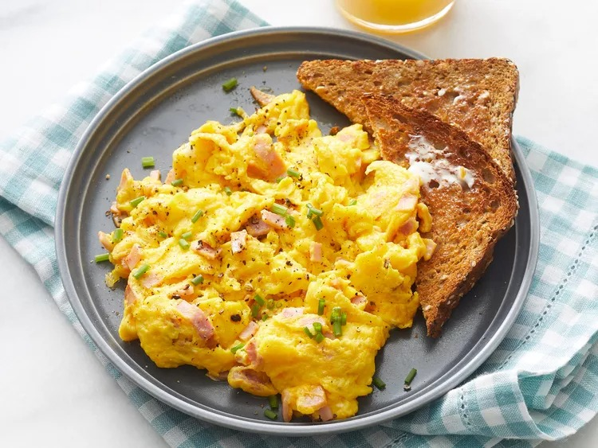

Scrambled Eggs

Description
The recipe for scrambled eggs is designed to create a rich, creamy, and fluffy dish that’s easy to prepare and full of flavor.
This recipe yields a comforting, satisfying dish that’s perfect on its own or served alongside toast, avocado, or your favorite breakfast sides. It’s a versatile and customizable recipe that can easily be adapted with extra ingredients like cheese, herbs, or sautéed vegetables.
Ingredients
- 2 large eggs
- Salt and pepper
- 1 teaspoon cream or milk
- ½ teaspoon butter
Steps
- Gather all ingredients.
- Whisk eggs, a pinch of salt, and a splash of milk (optional) for extra creaminess.
- Heat a non-stick skillet over medium-low heat and melt a little butter.
- Pour in the eggs, and gently stir with a spatula.
- Continue cooking until the eggs are soft, creamy, and slightly runny.
- Remove from heat and serve immediately.